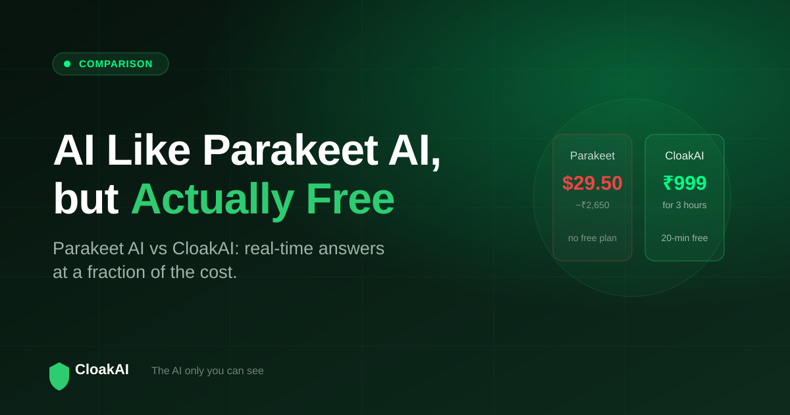
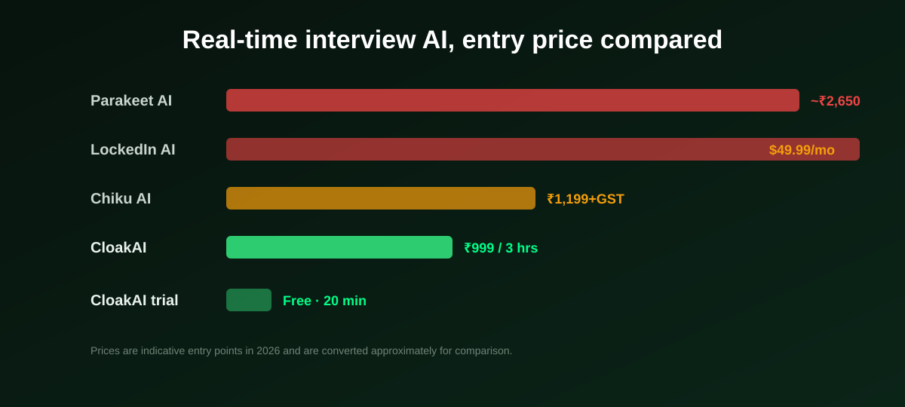

Parakeet AI is one of the most searched real-time interview tools in the world, which is exactly why so many people then search for an AI like Parakeet AI that is free. The reason is simple: Parakeet has no free plan, and its entry price is steep for most job seekers, especially in India. This guide gives an honest Parakeet AI vs CloakAI comparison, answers whether Parakeet AI is good for interviews, and shows where it sits against Chiku AI, Final Round AI, and LockedIn AI.
Parakeet AI is a solid, multilingual real-time tool, but it has no free plan and costs around ₹2,650 to start. If you want the same real-time help with a genuine free trial and much lower cost, CloakAI is the closest free-to-try alternative: native, invisible at the OS level, and priced from ₹499.
Why People Look for a Free Alternative to Parakeet AI
Parakeet AI is credible. It works in real time on Zoom, Teams, and Meet, supports a large number of languages, and uses a credit model where credits do not expire. But three things send people looking for an alternative:
- No free plan. You cannot try Parakeet before paying, which is a real barrier when you just want to see if a tool works for you.
- High entry price. The starting price is roughly ₹2,650 for three interview credits, which is expensive for a candidate running a few interviews.
- Priced in USD. For Indian job seekers, paying in dollars adds friction and cost compared to a local, INR-priced tool.

Is Parakeet AI Good for Interviews?
Yes, on its merits Parakeet AI is a capable interview assistant. Its multilingual support is genuinely strong, and the credit model that never expires is candidate-friendly if you only interview occasionally. The honest caveats are cost and the lack of a free trial. It also markets itself as "undetectable", but like most tools that claim this, it relies on the same mechanisms competitors use rather than a demonstrably different technical approach. If price and try-before-you-buy do not matter to you, Parakeet is a reasonable choice. If they do, keep reading.
New here? Try every feature free for 20 minutes, no signup and no card needed.
Try CloakAI for free 20-minute free trial · No credit card required · Windows 10 & 11Parakeet AI vs CloakAI: Head to Head
| Feature | Parakeet AI | CloakAI |
|---|---|---|
| Real-time live answers | ✓ | ✓ |
| Free plan / trial | ✗ None | ✓ 20 min full |
| Entry price | ~₹2,650 (3 credits) | ₹499 (1 hr) / ₹999 (3 hr) |
| Native desktop app | ✓ | ✓ Windows |
| OS-level screenshare invisibility | ⚠ Claimed | ✓ Content protection |
| Resume personalisation | ⚠ Basic | ✓ Deep |
| On-screen coding scan | ✓ | ✓ |
| INR / UPI payments | ✗ USD | ✓ PhonePe / UPI |
The gap is not real-time ability, both tools have that. The gap is that CloakAI lets you try it free and costs a fraction as much, which is exactly what people searching for a "free Parakeet AI" want.
Where Chiku AI, Final Round AI, and LockedIn AI Fit
Parakeet AI vs Chiku AI
Chiku AI is the India-focused competitor, cheaper than Parakeet and tuned to how Indian candidates speak. Its catch is architecture: Chiku runs in the browser, and browser windows are captured on screenshare by default, which makes true invisibility unreliable. CloakAI is cheaper than Chiku and, being a native app, is invisible at the OS level in a way a browser tool cannot match.
Final Round AI vs Parakeet AI
Final Round AI is a well-known Western tool with real-time suggestions, but at around $96/month it is one of the priciest options and has documented screenshare visibility concerns. Parakeet is cheaper per use than Final Round; CloakAI is cheaper than both and does not carry a monthly subscription.
LockedIn AI vs Parakeet AI
LockedIn AI is a broad career platform with many tools and a free tier, but its premium plans start around $49.99/month and reviewers have flagged that the browser-based copilot can be visible when tabs are switched. Parakeet is more focused on the live interview than LockedIn's wide toolkit; CloakAI is more focused still, and the only one of the group that is both native and invisible at the OS level.
Not ready to buy? Test every one of those features free for 20 minutes first.
Try CloakAI for free 20-minute free trial · No credit card required · Windows 10 & 11What About Parakeet AI's Net Worth and Size?
Parakeet AI is privately held and does not publish an official valuation, so any "net worth" figure you see online is an estimate rather than a confirmed number. The company self-reports a very large user base. That is impressive marketing, but it is not the right basis for choosing an interview tool. The questions that actually decide your interview are narrower: does it answer in real time, does it stay invisible when you share your screen, and does it fit your budget. On those three, CloakAI is a strong, lower-cost, free-to-try answer.
Final Verdict
If you are searching for AI like Parakeet AI for free, the honest truth is that Parakeet itself is not free, and its entry price is high for most job seekers. CloakAI gives you the same real-time interview help with a genuine 20-minute free trial, OS-level screenshare invisibility, deeper resume personalisation, and INR pricing from ₹499. It is the alternative that lets you test everything Parakeet asks you to pay for up front, and decide with real evidence.
Line it up for your next interview and try the whole thing free for 20 minutes.
Try CloakAI for free 20-minute free trial · No credit card required · Windows 10 & 11